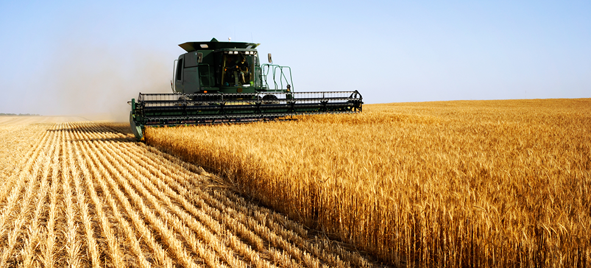

Un titre pour mon album photos facebook102
- 
Polaris UI Free is a set of beautiful free UI components, which includes Edit Boxes, Check Boxes, Radio Buttons.
Ma vidéo super méga cool
Polaris UI Free is a set of beautiful free UI components, which includes Edit Boxes, Check Boxes, Radio Buttons.
La FRSEA Rhône-Alpes recrute son directeur (H/F)
Polaris UI Free is a set of beautiful free UI components, which includes Edit Boxes, Check Boxes, Radio Buttons.
L'avis du CESE sur la gestion de l'eau en agriculture est voté dans la discorde
Polaris UI Free is a set of beautiful free UI components, which includes Edit Boxes, Check Boxes, Radio Buttons.
L'avis du CESE sur la gestion de l'eau en agriculture est voté dans la discorde
Polaris UI Free is a set of beautiful free UI components, which includes Edit Boxes, Check Boxes, Radio Buttons.
Projet de loi Consommation : un pas significatif vers des relations commerciales plus équitables